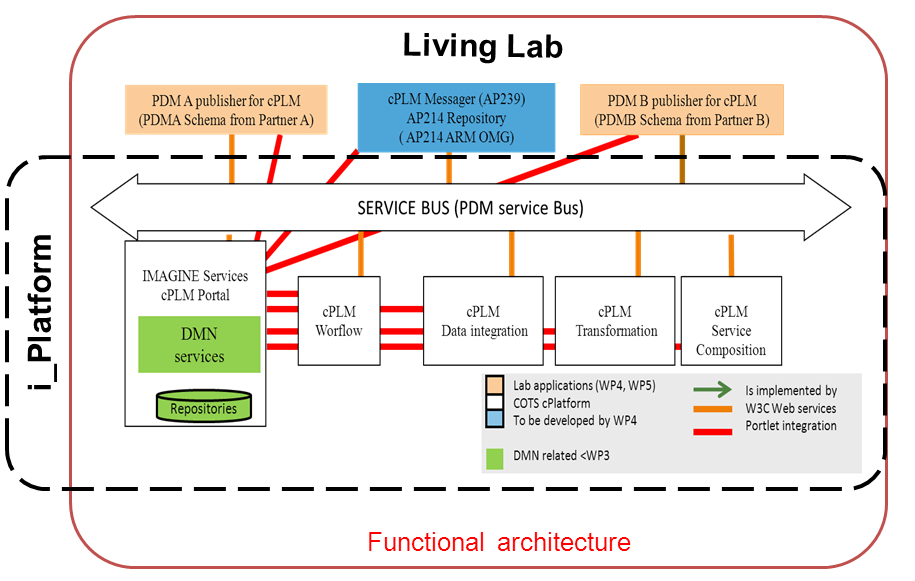
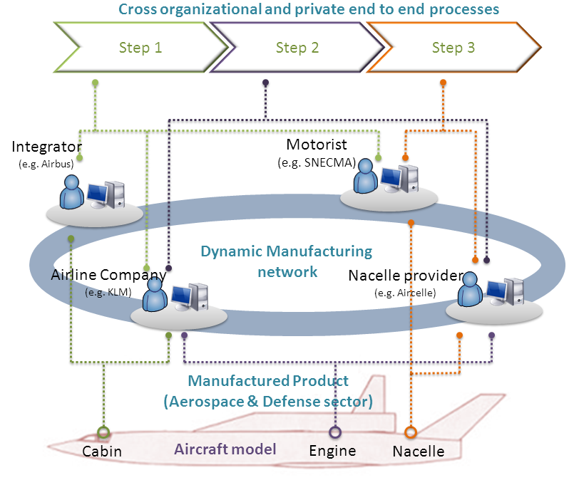
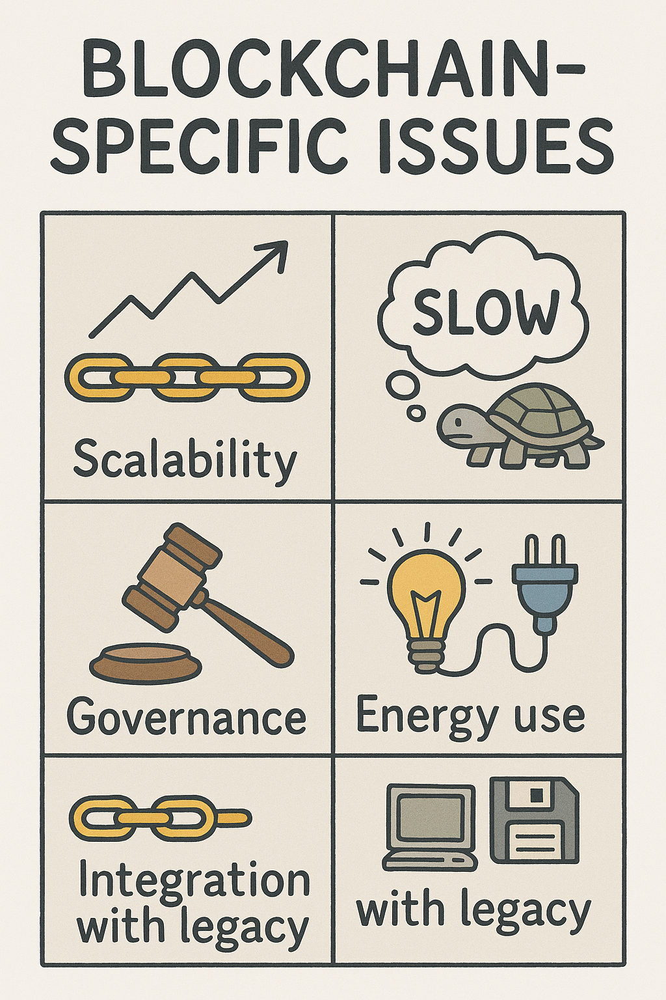

Blockchain and Interoperability
Enterprise and Technical Perspectives
for Effective Collaboration.

© 2025 Dr Nicolas Figay. Tous droits r√©serv√©s. Copyleft sous licence Creative Commons CC BY 2025.
who I am
Dr. Nicolas Figay
- Expert in Enterprise Application Interoperability
- Creator of ArchiCG — an open-source tool for semantic cartography
- Doctor and HDR-qualified researcher, recognized in the academic and scientific community
- External collaborator with LIRIS (Laboratoire d'Informatique en Image et Systèmes d'information), working with Prof. Parisa Ghodous at Université Lyon 1
- International expert on PLM interoperability, MBSE, EA
- Contributor to major European projects on interoperability and digital continuity
- Former lead at Airbus
- Specialist in ISO STEP standards, ontology-based modeling, and open ecosystems
To share my experience and carrier path in order to
give you perspective for future development path
while contextualizing software development in a more global enterprises
digitalisation context.
Objective of the presentation
Introduce enterprise application interoperability in digital ecosystems
Preparing and building continuous operational interoperability imply to:
- Identify brakes and enablers to effective collaboration
- Prepare systems for blockchain-based collaboration
- Promote open standards and model-driven approaches
- Bridge strategic vision with technical implementation
Key Message
Interoperability is not a feature of blockchain.
It is a prerequisite for blockchain-based collaboration.
- Semantic Coherence
- Shared Understanding of Processes
- Trusted and Traceable Integration
What Is Enterprise Application Interoperability?
üè¢ Enterprise Application
An Enterprise Application is a software system designed to support and automate various business processes within an organization. These applications facilitate the integration of information across departments, enhancing efficiency and decision-making.
üìå Key Characteristics
- Process Integration: Connects disparate business functions such as finance, human resources, and supply chain.
- Data Consistency: Ensures uniform data across the organization.
- Scalability: Handles increasing amounts of data and users.
- Customization: Adaptable to specific organizational needs.
- Interoperability: Facilitates communication with other systems and applications.
üß© Technical Enterprise Application
A Technical Enterprise Application is a specialized software system designed to support and automate technical and engineering processes within an enterprise. These applications manage complex data and workflows across the product lifecycle, including design, simulation, manufacturing, and maintenance, ensuring integration within the enterprise's information system.
üîß Key Characteristics
- Domain-Specific Functionality: Tailored to engineering and technical domains, such as CAD, CAE, and PLM systems.
- Lifecycle Integration: Supports various phases of the product lifecycle, facilitating seamless transitions between stages.
- Interoperability: Designed to interact with other enterprise applications and systems, often through standardized protocols and data formats.
- Complex Data Management: Handles intricate datasets, including 3D models, simulations, and technical documentation.
- Scalability and Flexibility: Capable of adapting to evolving technical requirements and integrating new technologies.
üîó Enterprise Application Interoperability
Enterprise Application Interoperability refers to the capability of diverse enterprise applications to seamlessly exchange, share, and aggregate information across organizational boundaries. This interoperability ensures continuous operational collaboration by aligning business processes, applications, and underlying technologies.
üìå Key Characteristics
- Governance and Architecture: Establishes governance structures and architectural frameworks to support interoperability.
- Standardization: Utilizes open and governed standards to facilitate consistent data exchange.
- Semantic Preservation: Maintains the meaning and context of information across different systems.
- Resilience and Agility: Enhances the organization's ability to adapt to changes and recover from disruptions.
- Collaborative Processes: Supports synchronized business processes across multiple organizations.
üîÅ Continuous Operational Interoperability
Continuous Operational Interoperability refers to the sustained ability of diverse and evolving enterprise systems to seamlessly collaborate, ensuring uninterrupted information exchange and process integration across organizational boundaries. This concept emphasizes the need for ongoing alignment between business processes, supporting applications, and underlying technologies to maintain effective collaboration in dynamic environments.
üìå Key Aspects
- Governance and Architecture: Establishes strategic governance structures and architectural frameworks to support interoperability.
- Standardization: Utilizes open and governed standards to facilitate consistent data exchange.
- Semantic Preservation: Maintains the meaning and context of information across different systems.
- Resilience and Agility: Enhances the organization's ability to adapt to changes and recover from disruptions.
- Collaborative Processes: Supports synchronized business processes across multiple organizations.
üîó Types of Interoperability
We can indentify five critical dimensions of interoperability essential for seamless enterprise collaboration:
- Data Interoperability: Ensures that data can be exchanged and understood across different systems, maintaining consistency and accuracy.
- Process Interoperability: Aligns business processes across organizations, enabling coordinated workflows and shared objectives.
- Semantic Interoperability: Guarantees that the meaning of exchanged information is preserved and understood, facilitating accurate interpretation.
- Technical Interoperability: Establishes the technical infrastructure and standards that allow systems to connect and communicate effectively.
- Organizational Interoperability: Aligns organizational structures, policies, and cultures to support collaborative efforts and shared goals.
These dimensions collectively contribute to achieving continuous operational interoperability, ensuring that enterprise systems can collaborate effectively and adapt to dynamic environments.
✈️ Collaborative Manufacturing Development as defined in RISESTEP, IMAGINE or SIP Research Projects
The RISESTEP, IMAGINEor SIP European projects exemplify collaborative efforts in the aerospace industry, focusing on the development of aircraft through distributed Digital Mock-Up (DMU) and system modeling. These initiatives address interoperability challenges by integrating diverse tools and processes across organizations.
The following video provides an overview of these collaborative projects:
Key Challenges in Achieving Interoperability
⚠️ Key Challenges in Achieving Interoperability
Here are several critical challenges that organizations face when striving for continuous operational interoperability:
- Legacy Systems: Outdated systems with proprietary architectures hinder integration with modern technologies.
- Organizational Silos: Departments operating in isolation lead to fragmented processes and data, impeding collaboration.
- Semantic Mismatches: Inconsistent terminologies and data interpretations across systems cause misunderstandings and errors.
- Change Management: Resistance to change and lack of stakeholder engagement can derail interoperability initiatives.
- Functional redundancy: of software products which are in addition often incompatible
- Cost of Integration: High expenses associated with system upgrades, training, and process reengineering can be prohibitive.
Addressing these challenges requires a strategic approach that encompasses technological upgrades, organizational restructuring, and stakeholder engagement.
üí∞ Challenge: Interoperability Barriers

üí∞ Challenge: Difficult subcontractors' conditions
üí∞ Challenge: Huge supply chains

üí∞ Challenge: Riching Digital Continuity despite complexity

Interoperability Brakes and Enablers
üöß Brakes and Enablers of Interoperability
üî¥ Brakes
- Cultural Barriers: Resistance to change and lack of shared vision among stakeholders.
- Organizational Silos: Fragmented structures that impede information flow and collaboration.
- Semantic Misalignments: Inconsistent terminologies and data interpretations across systems.
- Technical Incompatibilities: Diverse systems and technologies lacking standard interfaces.
- Economic Constraints: Limited resources allocated for integration initiatives.
- Continuous Change and Innovation: with growing pace of change with disruption.
üü¢ Enablers
- Distributed Technical Service Oriented Platforms: with appropriate integration technologies
- Semantic Alignment: Developing shared vocabularies and ontologies to harmonize data interpretations.
- Organizational Alignment and Appropriated Governance: Structuring organizations to promote cross-functional collaboration.
- Strategic Governance: Allocating resources to support interoperability projects and training.
- Adoption of Standards: Implementing open standards like STEP and ISA-95 to ensure consistency.
- Model-Driven Engineering (MDE): Utilizes MDE to create adaptable models that can bridge diverse systems and processes.
Unleashing these brakes and leveraging the enablers federating interoperability framework are crucial steps toward achieving continuous operational interoperability.
Some solutions and their accuracy for blockchain
- cPlatform: Iterative building of collaboration hub based on standardized protocols and components
- Living Lab: Involving users on experimenting in order to build their collaborative processes.
- Model Driven approach: projection of business logic on execution platform.
- Dynamic Manufacturing Network: Services for managing and qualifiying collaboration partners according to standardized cross organisational collaboration scenarios.
- Testbed: Assessing PLM standards adherence to collaboration processes on top of a testbed in order to derive test plan and test data sets for unitary and integration tests, but also enabling monitoring of actual collaboration
- Model Driven Engineering: Using Model Driven Architecture related technologies for project business logic on execution platform
- Extended Hypermodel for Interoperability: Ensuring Semantic Preservation and preventic data loss when changing platforms
cPlatform
Iterative building of collaboration hub based on standardized protocols and components

Living Lab
Involving users on experimenting in order to build their collaborative processes.
Dynamic Manufacturing Network
Services for managing and qualifiying collaboration partners according to standardized cross organisational collaboration scenarios
Testbed
Assessing PLM standards adherence to collaboration processes on top of a testbed in order to derive test plan and test data sets for unitary and integration tests, but also enabling monitoring of actual collaboration

Blockchain and Interoperability
- How to ensure continuous operational interoperability when including blockchains in enterprises?
- How to ensure end to end processes and cross organisational interoperability?
- How to ensure deal with digital continuity with evolution of Blockchain Technologies?
- Any architecture of reference?
- Open standards and maturity of the Digital Business Ecosystem in terms of interoperability?
- Other particular issues?
- Perspective leading to a growing usage and importance of blockchain technologies?
This implies a dialog between architects and blockchain solution providers

Process Interoperability and Blockchain
Challenges in integrating operational processes with blockchain systems.
A working topic at AFNOR with the White Book* "Business Process Interoperability supported by blockhain" produced in 2023
Proposal and illustration of a model based approach based on ArchiMate and BPMN standards
Still some work to be done for reaching an actual maturity!
* freely available from here
Continuous Interoperability with ArchiCG
Using ArchiMate and ArchiCG to model bluprints
in order to maintain continuity across
blockchain-enabled systems.
Blockchain Architecture of Reference
Is it something we can find in standard document or a given work place?
Open Standards and Blockchain Ecosystems
- Importance of open standards (e.g. ISO) for interoperability in blockchain ecosystems.
- What are the current standards produced by standardization?
- Are they aligned with the current digital business ecosystem?
Let's initiate a Blockchain digital business
ecoystem semantic cartography with:
ArchiCG you can access to through the Online Editor link at
https://nfigay.github.io/ArchiCG/
Let's open the graph available here
after downloading it on you machine, through the menu File>>Load
Blockchain-Specific Issues
Perspectives and Future Outlook

Conclusion
- I presented you Continuous Operational Interoperability of enterprise applications
- It impacts how you will design and develop solution based on blockchain
- This is not only technical and it involves collaboration with various kind of architects and complementary technologies
- Blockchain technologies are quite young and interoperability maturity is still to be built
A Master Thesis is under preparation concerning Blockchain Interperability involving XPRL commons and LIRIS
Questions & Answers
Open floor for participants to raise issues, give feedback, share insights.